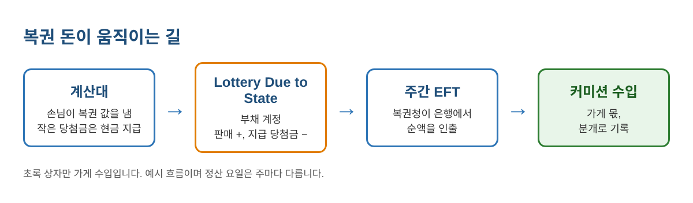
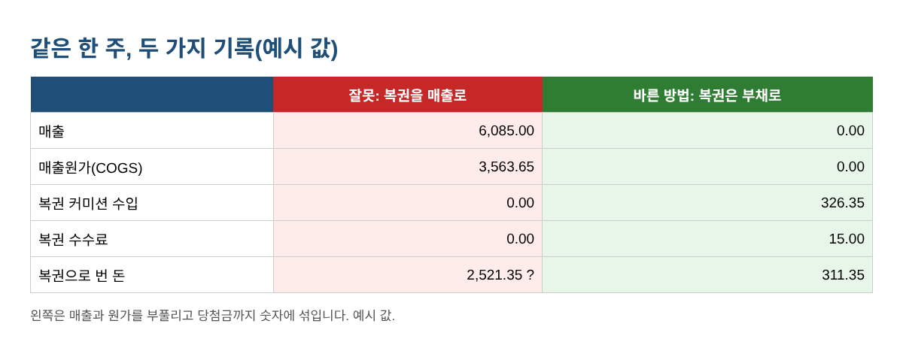
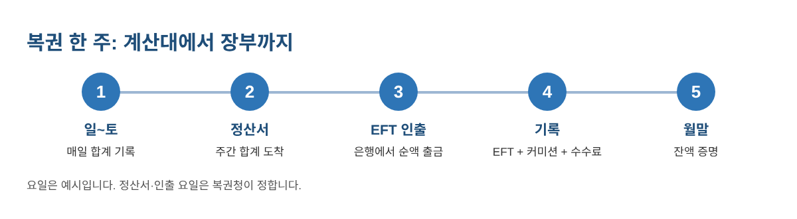

편의점 복권 매출·당첨금·커미션, QuickBooks에 제대로 기록하는 법 (Desktop·Online)
가게에서 복권을 판다면 계산대 현금 중 상당 부분은 사장님 돈이 아닙니다. 복권청을 대신해 받아 두고, 작은 당첨금은 서랍에서 내주고, 일주일에 한 번 복권청이 은행에서 순액을 EFT로 가져갑니다. 가게의 진짜 수입은 커미션과 가끔 받는 판매 보너스뿐입니다.
문제는 장부에서 생깁니다. 많은 편의점·리커스토어·주유소·델리가 복권을 매출로 찍고, 주간 EFT를 "매출원가(COGS)"로 처리합니다. 그러면 매출은 실제보다 훨씬 커 보이고 마진은 이상해지며, 복권 관련 계정은 아무리 해도 맞지 않습니다. QuickBooks 커뮤니티에도 같은 질문이 계속 올라오지만 답은 늘 부분적입니다. 이 글은 QuickBooks Desktop이나 Online에서 오늘 바로 설정할 수 있는 전체 방법과, 복권청 계산을 직접 확인하는 엑셀 수식을 정리했습니다.
핵심: 복권 돈은 부채 계정에 둔다
복권은 "남의 돈을 맡아 둔 것"으로 처리합니다. 티켓을 팔면 복권청에 줄 돈이 늘고, 당첨금을 내주면 줄고, EFT가 나가면 갚은 것입니다. 복권청이 떼어 주는 커미션만 수입이 됩니다.


1단계: 계정 4개와 품목 2개 만들기(처음 한 번)
- Lottery Due to State – Other Current Liability(유동부채)
- Lottery Commission Income – Income 또는 Other Income
- Lottery Fees – Expense(단말기·서비스·부도 수수료)
- Lottery Over/Short – Expense(원인을 못 찾은 작은 차이)
QuickBooks Desktop
- Lists > Chart of Accounts > Account > New에서 계정 4개를 만듭니다.
- Lists > Item List > Item > New에서 Other Charge를 고르고 이름은 Lottery Sales, Account는 Lottery Due to State로 지정합니다. 판매세 과세 여부는 주 규정을 확인하세요.
- 같은 방법으로 Lottery Prizes Paid를 만들고(Account = Lottery Due to State) 마이너스 금액으로 씁니다.
QuickBooks Online
- Chart of accounts(현재 Intuit 메뉴: All apps > Accounting > Chart of accounts)에서 New를 누르고, 부채 계정은 Account Type을 Other Current Liabilities로 고릅니다. Detail Type은 목록에서 가장 가까운 것을 선택합니다.
- Products & services(All apps > Sales & Get Paid > Products & services)에서 New > Service를 고르고 이름을 Lottery Sales로, Income account 드롭다운을 Lottery Due to State로 지정합니다. Intuit 도움말이 선수금(retainer·deposit)을 처리할 때 쓰는 방법과 같습니다. 돈을 수입이 아니라 부채로 보내는 품목입니다.
- Lottery Prizes Paid도 같은 방법으로 만듭니다.
Online 메뉴 이름은 가끔 바뀝니다. 경로가 다르게 보이면 앱 안에서 "Chart of accounts", "Products and services", "Journal entry"를 검색하세요. 회계 처리 방법은 그대로입니다.
2단계: 매일 복권 기록하기
복권 단말기 리포트에서 숫자 네 개를 적습니다. 온라인(추첨식) 매출, 즉석복권 매출, 온라인 당첨금, 즉석 당첨금입니다. 일일 Sales Receipt(또는 일일 요약)에 매출 합계는 Lottery Sales 줄로, 당첨금은 Lottery Prizes Paid 마이너스 줄로 넣습니다. 이제 그날 입금액이 서랍 현금과 맞고, 복권 돈은 수입으로 가지 않습니다.
같은 네 숫자를 엑셀에도 적어 두세요. 날짜가 A2에 있을 때 그날이 어느 정산 주에 속하는지(예: 토요일 마감) 구하는 수식은 다음과 같습니다(엑셀·구글 시트 공통).
=A2+MOD(7-WEEKDAY(A2),7)
WEEKDAY는 일요일 1, 토요일 7을 돌려줍니다. 정산 주가 다른 요일에 끝나면 7을 그 요일 번호로 바꾸세요.
3단계: 기록 전에 주간 정산서부터 확인
주간 정산서는 모든 항목을 상계해서 보여 줍니다. 한 줄로 계산을 다시 해 보면 EFT가 맞는지 바로 보입니다.
예상 EFT = 온라인 매출 + 즉석 정산액 − 온라인 당첨금 − 즉석 당첨금 − 커미션 − 보너스 + 수수료
B2:H2에 값이 있다면 =B2+C2-D2-E2-F2-G2+H2, 실제 EFT가 I2에 있다면 차이는 =ROUND(I2-J2,2).
| 예시: 2026년 11월 14일 마감 주 | 금액 |
|---|---|
| 온라인(추첨식) 매출 | 3,985.00 |
| + 즉석복권 팩 정산액 | 2,100.00 |
| − 당첨금(온라인 870.00 + 즉석 1,340.00) | (2,210.00) |
| − 판매 커미션(304.25)과 지급 보너스(22.10) | (326.35) |
| + 단말기 수수료 | 15.00 |
| = 복권청이 은행에서 인출하는 EFT | 3,563.65 |
예시 숫자입니다. 정산서 양식·커미션율·주 마감 요일은 주마다 다릅니다.
그다음 같은 주의 가게 일일 합계와 복권청 숫자를 비교합니다(주 마감일 열에 SUMIFS를 쓰면 편합니다). 예시에서는 가게 기록이 온라인 매출 20.00 적고, 당첨금은 40.00 많습니다. 하루치 입력 누락과, 복권청이 인정하지 않은 티켓에 당첨금을 내준 경우입니다.
4단계: 주간 기록 입력
| # | QuickBooks 위치 | 차변 | 대변 | 예시 |
|---|---|---|---|---|
| 1 | 은행 피드: EFT 인출 | Lottery Due to State | 은행 | 3,563.65 |
| 2 | 분개: 커미션 + 보너스 | Lottery Due to State | Lottery Commission Income | 326.35 |
| 3 | 분개: 수수료(있을 때) | Lottery Fees | Lottery Due to State | 15.00 |
- Desktop: Bank Feeds에서 EFT 줄의 계정을 Lottery Due to State로 지정해 추가하고, 2·3번은 Company > Make General Journal Entries로 입력합니다.
- Online: Bank transactions의 For review 탭에서 EFT 인출을 Lottery Due to State로 분류합니다. 2·3번은 + New > Journal entry에서 Account·Debits·Credits·Memo를 채우고 Save and close를 누릅니다.

5단계: 월말 잔액 증명
위 기록을 마치면 Lottery Due to State에는 아직 청구되지 않은 금액만 남아야 합니다. 마지막 정산서 이후의 매출과 당첨금, 아직 정산되지 않은 즉석 팩에서 판 금액, 그리고 이미 돈을 낸 팩에 남은 티켓(마이너스)입니다.
| 2026년 11월 20일 예상 잔액 | 금액 |
|---|---|
| + 마지막 정산서 이후 온라인 매출(11/15–11/20) | 3,420.00 |
| − 마지막 정산서 이후 지급 당첨금 | (1,665.00) |
| + 아직 청구 안 된 즉석 팩: 판매한 금액 | 1,013.00 |
| − 청구된 팩: 진열대에 남은 티켓 | (44.00) |
| = 예상 Lottery Due to State | 2,724.00 |
| QuickBooks 대차대조표 잔액 | 2,699.00 |
| 차이(장부상 줄 돈이 25.00 적음) | (25.00) |
예시 숫자입니다.
원인을 먼저 찾고, 그래도 남는 금액만 Lottery Over/Short로 처리합니다(부족: 차변 Lottery Over/Short, 대변 Lottery Due to State, 초과는 반대).
자주 하는 실수
- 복권 매출을 수입으로, EFT를 매출원가로 기록해 둘 다 부풀리는 경우.
- 은행 피드에서 EFT를 새 비용으로 추가하고 또 한 번 기록하는 경우.
- 일일 기록에서 지급 당첨금을 빠뜨려 입금액이 맞지 않는 경우.
- 커미션을 두 번 기록하는 경우(EFT 안에서 한 번, 입금으로 또 한 번).
- 주의 소매점 지급 한도를 넘는 당첨금을 내주는 경우. 예: 캘리포니아 복권청은 $599 이하 당첨금은 어느 소매점에서나 받을 수 있고, 그보다 큰 금액은 복권청에 청구하도록 안내합니다.
- 부채 잔액을 한 번도 점검하지 않아 매주의 작은 오차가 1년 동안 쌓이는 경우.
자주 묻는 질문
복권 커미션은 과세 소득인가요?
커미션과 판매 보너스는 티켓을 판 대가로 가게가 받는 돈이므로 수입으로 기록합니다. 티켓 판매액과 당첨금은 복권청의 돈입니다. 세금 신고서에 어떻게 표시할지는 세무 대리인과 상의하세요.
복권 매출을 판매세 신고에 넣어야 하나요?
주마다 규정이 다릅니다. 총매출에 넣을지 뺄지는 주 세무국이나 세무 대리인에게 먼저 확인하세요.
복권 전용 은행 계좌를 쓰면요?
같은 계정을 그대로 씁니다. 가게 계좌끼리 돈을 옮기는 것은 이체일 뿐 복권 거래가 아닙니다.
12월 31일을 걸치는 주는 어떻게 하나요?
연말에는 그 금액을 Lottery Due to State에 그대로 둡니다. 12/31 기준으로 잔액을 점검하고, 그날 남은 즉석복권도 세어 두세요.
체크리스트
- 계정 4개·품목 2개를 만들고 이름을 바꾸지 않는다.
- 매일: 복권 숫자 네 개 기록, Sales Receipt에 Lottery Sales(+)·Lottery Prizes Paid(−).
- 매주: 정산서 계산 다시 하기, EFT 차이 0.00, 가게 기록과 비교.
- 매주: EFT를 Lottery Due to State로 분류, 커미션·수수료 분개.
- 월말: 잔액 증명, 남은 금액만 과부족 분개.
위 과정을 그대로 해 주는 복권 매출·커미션 기록 키트 2026은 아래 무료 키트 다운로드에서 가입 없이 무료로 받으실 수 있습니다(엑셀 + PDF 가이드).
이 글은 교육용 정보이며 세무·법률·회계 자문이 아닙니다. 주 복권청의 계약·정산서·규정이 우선하며, 본인 상황은 자격 있는 전문가와 상의하세요. 모든 숫자는 예시입니다. QuickBooks는 Intuit Inc.의 등록 상표이며, 이 글은 Intuit와 관련이 없고 Intuit의 보증을 받지 않았습니다. (QuickBooks is a registered trademark of Intuit Inc.; not affiliated with or endorsed by Intuit.)
출처 (2026년 11월 확인)
- Intuit QuickBooks help: Record a retainer or deposit (service item with a liability income account)
- Intuit QuickBooks help: Create journal entries in QuickBooks Online
- Intuit QuickBooks help: Match transactions in QuickBooks Online
- California Lottery: Claim a Prize (retailer limit $599 and under)
- QuickBooks Community: Lottery best practices
- QuickBooks Community: Lottery sales & winner payouts
- QuickBooks Community: Proper way to record lotto sales, commission and payouts
무료 키트 다운로드
글에서 설명한 내용을 그대로 따라 할 수 있는 도구입니다. 가입 없이 바로 받으세요.
- Excel 계산 도구 (.xlsx)Lottery_Settlement_Kit_2026_EN_KR.xlsx · 65 KB
- 단계별 가이드 (PDF)Lottery_Settlement_Guide_2026_EN_KR.pdf · 363 KB
본인과 본인 사업에 무료로 쓰세요. 재판매·재배포는 하지 마세요. 일반 정보이며 세무·법률·회계 자문이 아닙니다. 숫자는 본인 자료로 꼭 확인하세요. QuickBooks는 Intuit Inc.의 상표이며 BIZLEX는 Intuit과 관련이 없습니다.